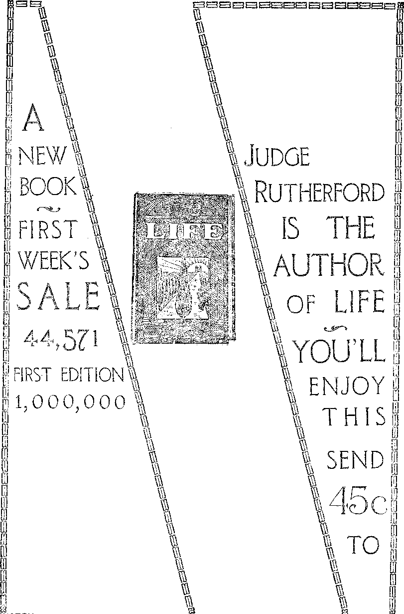

A JOURNAL OF FACT HOPE AND COURAGE
K88l!m!H?HH!nH!H8US88H!8HISh^.
THE MILKMAN
THE ANTIQUITY OF MAN
WHY DOCTORS FAIL
PREVENT THAT COLD
POWER TRUST TACTICS
RELIEF FOR THE PEOPLE
radio Lecture by Judge Rutherford
nnmnitiiSiiKtiHimsoiiomiHiimiiHHiintsiisiiiiiiiiiiiig
EVERY OTHER WEDNESDAY 5c a copy - $1.00 a year - Canada & Foreign $1.50
Volume XI* No. 266 November 27, 1929
Contents
<&........-.....— .. =8<^0!l= .■ ... ,.,;a.-.^JL;BggS|.a:s=*W
Labor and Economics
Social and Educational
Finance—Commerce—Transportation
Using the Banks Against the People .
Political—Domestic and Foreign
Battleships Have Had Their Day
Persecuting Hindus in Shanghai
Agriculture and Husbandry
Boulder Dam Limitations as to Irrigation
Science and Invention
Home and Health
How I Dismissed My Undertaker .....
Religion and Philosophy
The Church of England Bishops .
The Children’s Own Radio Story
Published every other Wednesday at 117 Adams Street, Brooklyn, N. Y., U. S. A., by WOODWORTH, KNORR & MARTIN
Copartners and Proprietors Address: ll't Adams Street, Brooklyn, N. Y., V. S. A.
CLAYTON J. WOODWORTH .. Editor ROBERT .1, MARTIN .. Business Manager ' NATHAN H. KNORR .. Secretary and Treasurer
Five Cents a Copy—$1.00 a Year Make Remittances to THE GOLDEN AGE Notice to Subscribers: We do not, as a rule, send an acknowledgment of a renewal or a new subscription. A renewal blank (carrying notice of expiration) is sent with the journal one month before the subscription expires. Change of address, when requested, may be expected to appear on address label within one month.
Foreign Offices
I British Craven Terrace, London, W. 2, England
Canadian . ....... . . . 40 Irwin Avenue, Toronto 5, Ontario, Canada
Australasian . * 7 Beresford Rd., Strathiield, Sydney, N. S. W., Australia South Africa............6 Lelie Street, Cape Town, South Africa
Entered as second-class matter at Brooklyn, N, Y., under the Act of March 3, 1879.
■■ ■■ .11 Ill-■..■■■If I-... • IL ...-■JW, . | .1 ■...■£■ .r . ■ .LJL--J! ■ , J ..J-W-JM. I , r l,iil,lll . ill IIIM ,
Volume XI Brooklyn, N. Y., Wednesday, November 27, 1929 Number 266
Potpourri
An Amphibian Plane .
NEW style of amphibian plane has wheels which can be used for land flying but which the aviator can wind up out of the way in case he wishes to land on the water, or let down again if he wishes to land on the land. -The navy is already using these amphibian planes.
370 Miles an Hour
Waghorn, winner of the Schneider trophy for 1929, is said to have attained 370 miles an hour at one stage of his travel through the air. This is no doubt the fastest speed at which any human being has hitherto traveled. The airplane record for speed will stay with Britain for another year.
Seeding a Field by Airplane
NEAR Bellingham, Washington, 160 acres of land were seeded by airplane in an hour and forty minutes. The plane flew 500 feet above the ground, at the rate of 95 miles an hour, and the farmer fed the seed to the air from a sack in a six-inch stream, using about 800 pounds of seed.
Automatic Airport Lighter
CINCINNATI man has invented a device by means of which an airplane can turn on the lighting systems of airports over which the plane flies. This is brought about by a system of modulated wave lengths transmitted by radio from a miniature radio transmitting apparatus on the plane.
The Sperry Rail Tester
rpi-IE Sperry rail tester, by electrical means, -®- gives a precise picture of the internal uniformity of rails, inch by inch, and tags bad spots by the spraying of paint at the defective points. Three testers are examining twenty thousand rails a day. The same principle is being used in detecting hidden defects in welds.
Canadian Indians Seek Justice
ON THE ground that they are not Canadians, but an independent nation, the Indians of Canada have representatives in Europe seeking justice from the League of Nations. They seek to have Canada retrace some of its steps of injustice toward them. Lo, the poor Indian!
Styles in Hold-Ups
T T SEEMS that there are styles even among the hold-up men. The figures show that eight years ago there were 220 bank burglaries and 133 bank hold-ups; while last year the bank burglaries were less than one-third in number what they were seven years ago, and the hold-ups were more than double.
School Customs in Europe
IN EUROPE the average school day is six hours, there is school on Saturday, and there is only a six weeks’ vacation period. As a consequence of this more serious attitude toward school work the children of Europe, of equal age and school opportunities, are usually better educated than in America.
Have Your Cat Dry-Cleaned
NEW YORK has started a beauty shop for dogs and cats. The price charged for drycleaning a cat is $3.00. A talking point is that in a large city a light-complexioned cat has trouble in maintaining a nice appearance and that soaking it in the bath tub ruins its disposition.
Pneumatic Tubes in Office Buildings
LL new office buildings in New York are being equipped with pneumatic tubes for the delivery of messages, and the buildings are being connected with each other by means of other tubes. In a little while the twenty thousand messenger boys of New York city will be a thing of the past.
A Dry Year All Around
THE year 1929 has been one of extreme JL droughts. These have almost covered the earth. In parts of Pennsylvania farmers had to haul their drinking water- two miles. In the Argentine Republic they were without rain for six months.
Waggoner Ranch in Western Texas
THE Waggoner Ranch in western Texas contains more than 800 square miles, or, in other words, an area almost thirty miles square. The 512,000 acres of this farm are spread out over parts of five counties and contain four oil fields of note.
Cardinals Get a Raise of Pay
THE pope has raised the pay of the cardinals attached to the Vatican from $1,190 a year to $5,405 a year, the increase to date from July 1, 1929. Cardinals who are heads of ecclesiastical congregations will receive an additional yearly allowance of $1,350 each.
Telephoned Fifteen Thousand Miles
Walter S. Gifford, president of the American Telephone and Telegraph Company, has had the distinction of telephoning fifteen thousand miles. His voice went by wire from New York to Lawrenceville, N. J., thence by radio to Baldock, near London, thence by wire to Rugby, and thence by radio to Sydney; the return conversation was by the same route.
Uses of the Radio Ear
TTEALTH CULTURE tells us that the radio -^--L ear, tested out in a school for the deaf at Canton, Ohio, enabled twenty children to hear their own voices and other voices for the first time in their lives. Within half an hour several of the children were able to speak simple words, the first intelligible sounds they had ever uttered.
Fertilization of Fish Ponds
AWAY has been found to fertilize fish ponds.
Tiny water plants grow more rapidly under the spur of the fertilizer, minnows eat the plants, the big fish eat the minnows, and the men eat the big fish when they can catch them. Too much pasturage chokes the fish, hence a very small quantity of copper sulphate is used to prevent overdevelopment of the plant life.
The Port of New York
T N THE amount of net tons of shipping which enter the port of New York the nearest competitor, Antwerp, is exceeded by over 50 percent. Antwerp’s figures for the past six months were 10,108,000 registered net tons, while the port of New York figures were 15,166,000.
Brooklyn Has Largest Piers
IpEW know that Brooklyn handles half of the port of New York’s foreign commerce, or that the world’s largest passenger ship, the Bremen, docks there, or that the ships docking there save three hours or more when entering or leaving the port.
Airports in the Philippines
rp.HE United States Government is establish--L ing air lines in the Philippines and will open sixteen airports. The Philippines are hvo thousand miles in length and the spaces between are so narrow that one may go from one end to the other without losing sight of land.
Chicago Regional Planning
K LL the territory within fifty miles from Chi-cago’s loop is now being carefully studied with a view to a comprehensive plan for all future development of highways, streets, parks, sewers, water supply, telephones, electric power, gas and other facilities. It is expected that by 1950 this territory will have a population of 7,500,000.
To Build City in Russia
A CLEVELAND concern will, within the next fifteen months, build in Russia a new city covering an area of twenty-five square miles. This city, which is to be modern in every respect, will be built by American engineers and architects but with Russian labor. A Ford automobile and truck factory will be the principal industry of the city.
England’s Underground Lake
ENGLAND is interested in the discovery of an underground lake and river. The lake is about 900 feet long by 20 feet wide, and of great depth, and lies over a mile back from the entrance to the cave in which it is located. It is 500 feet beneath the surface of the ground. The river rushing into it has a tributary of considerable size. Little is known of these rivers.
udge Carr, of Boston, has won the esteem of TTOG raising in Indiana has been profitable all right-minded Americans by his stand for some years, but not in 1929. One farmer
BRITISH men are agitating for dress reform for men, declaring, in the language of the Manchester Guardian, that “Men’s clothes are heavy, thick, ugly, gloomy, uncomfortable, uncleanly, unhealthy and inartistic”; and so they are. Why men should dress in hard, thick black cloth and have something around their necks to choke them in hot weather is a problem needing solution.
CONVINCED that some of their paralytic patients were shamming, the authorities of a hospital in Guyaquil, Ecuador, loosed a boa constrictor in the ward, with the result that several patients made a grand rush for the doors and windows. The snake was harmless, but it was rather hard on those who were genuinely helpless to have it turned loose in their midst.
Imported Bugs from Across the Seas
AN IMPORTANT feature of agriculture in the United States at the present time is the importation of bugs from across the seas. The ladybug beetle from Australia is imported to California to keep down the pests that would otherwise destroy the orange crop, while the tachina fly from Japan is imported into New Jersey and eastern Pennsylvania to fight the Japanese beetle.
Birds Wreck Electric Works
A PPARENTLY the birds do not pay attention to the signs warning them to keep off the premises of electrical establishments. During the month of September a bat committed suicide by diving into the electrical apparatus of WEAF, incidentally putting that station out of commission for eight hours. A week later an eight-pound owl put St. Albans, Vt., in darkness and electrocuted three cows and himself at the same time.
HPHE opening of the Roosevelt Irrigation District in Arizona has provided that state with a cotton field 37,000 acres in extent. The field is twenty-four miles long, two to four miles wide, and the cotton stands, in many cases, higher than a man’s head. It is expected that diversification of crops will soon break up this vast field, perhaps the largest cotton field ever known.
THE ( Great Neck High School has a radio -L transmitter in each of its forty classrooms, and not only can the principal of the school address each student in the school without necessity of the student’s leaving his seat, but each classroom may listen in on the same or a different radio program at will. The school contains a model kitchen, a typesetting machine, and a printing press.
The Mountaineers of Virginia
T) resident Hoover has been fishing within a hundred miles of the national capital, where virtually the whole population is unable to read and write, few have ever seen the American flag or heard of the federal government, health protection is unknown, mothers teach their boys and girls of all ages to chew tobacco, and the people are too poor to buy even spoons and forks and plates.
May Abolish Letter Q
THERE is a movement on foot to abolish the letter q and to replace it by the ancient letter, looking like a letter E with its loose ends joined, which was for hundreds of years used by the Anglo-Saxons in place of the two letters th. At present these two letters come together once in less than eight words. The use of the new letter will save four percent of paper space. In the new plan qu would be replaced by the ancient cw.
I T IS claimed that Miss Mayo’s book, “Mother India,” wherein was exposed the fact 'that half the Hindu girls between the ages of ten and fifteen are wives, has been responsible 'for a new law in India limiting the age of consummation to fourteen years.
IT SEEMS that the automobile makers are waking up both the railway companies and the street car builders and both are doing something toward making travel by their respective methods more comfortable. Some of the new individual seat railway coaches are really very fine, and now a street car has been made in Pittsburgh the windows of which may be readily moved up and down by a crank the same as in an automobile. If some of these transportation concerns had done some thinking about the public long ago they might have more traffic and larger dividends now. .
THE dean of the College of Agriculture of the University of Nevada points out that the waters which would be impounded by Boulder Dam must of necessity be heavily impregnated with salt and borax, because both salt and borax deposits will be covered by the impounded waters. Waters so impregnated are not suitable for irrigating purposes. He further points out that it may be found that much of the land proposed to be irrigated by the dam will be found unprofitable for that purpose.
N EVANGELICAL clergyman, in Le Mars, Iowa, realizing that he would soon have to buy an alarm clock and overalls and get a job, tried the novel business of robbing banks while still holding on to his clerical job. He got the money from the bank all right, using a black mask and pistol on the job; but he forgot to take the license plate off his car, was traced to his home and, after many declarations of inno-cency, straightened matters out by committing suicide and asking that the money be returned to the bank. While in favor of having the clergy learn how to do some kind of useful work, we can not recommend their entrance into the already overcrowded ranks of hold-up men. Reverend Frolkey selected the wrong line of work.
EFERRING to Mussolini’s public declaration that he has 9,000 sentinels watching all the Catholic clergy in Italy, to make sure that they do nothing contrary to Fascism, the pope, in an address to Catholic youths, has lamented that such is the case but has declared that he is unable to do anything about it.
HPHE British Government has never recognized the aborigines of Australia as having any rights whatever to their own lands. As a consequence, as the whites have pushed farther and farther inland the aborigines have been deprived of their hunting lands and driven to work for the whites for what they would pay them, or else starve. The wages paid have not been enough to more than maintain the life of the worker himself, and his family have been left to starve.
THE average age of the sixteen Gastonia prisoners is but twenty-five. A picture of this group of young communists shows that they are but boys and girls, idealists, aiming for a better condition of society, but not knowing how it is to be brought about. It would be too bad if these young people got the deal that Sacco and Vanzetti received in Massachusetts. The conditions of which these young people complain should be removed, not the young people themselves.
CONSTANTLY recurring murders in the western part of North Carolina show that there is no government in that part of the country that is worthy of the name. Free speech is denied, men and women have been shot and killed, and others have been blackjacked and whipped, and other acts of violence have been perpetrated against them by mill officials whose names are known and by mobs which they have raised up to assist them. In these mobs there have at times been as many as fifty policemen, supposed officers of the law, in reality nothing but anarchists in uniforms. The fact that some of these mobs sing hymns when engaged in their dirty work of destroying America makes the whole thing beneath contempt.
Major General H. L. Gilchrist is reported as saying: “To choke a man to death with irrespirable gas, to injure his lung tissues and leave him, in the event of his recovery, an invalid for weeks or months, is not humane. The same objection may be made to the horrible injuries due to the rending power of any of the high explosives which drive jagged pieces of steel into human bodies and leave in place of the normal, man a lopsided and deformed remainder, sometimes shorn of both arms and deprived of both eyes.”
: > Directors of Munition Companies
'VTDARS ago, when Germany was contending J- with Britain for at least a partial freedom of the seas, the directors of the British ordnance and shipbuilding companies, who were also directors of the Krupp and other German and Austrian ordnance and shipbuilding concerns, deliberately used all their vast powers to increase ordnance and battleships on both sides, and even to promote ill feeling. America is now seen to have a number of this kind of expensive patriots, willing to create bad feeling between America and Britain if only they can bring in more orders to their plants.
The Telephone Trust
REFERRING to the devious methods by which the telephone trust borrows from the public at 4f,- percent and earns a net profit of 12.11 percent over all expenses, meantime repeatedly shoving up the rates higher and ever higher, Henry Ward Beer, president of the Federal Bar Association, says: “No holding company quite so accurately illustrates the ‘milking of the public’ as the American Telephone & Telegraph Company, a holding company which monopolizes and controls more than 85 percent of all the telephone companies in this country. No higher powered propaganda aces are on any corporation payroll in America than those which represent the telephone trust. Every time it opens a new circuit or strings a wire to a distant point, it actually has the president of the United States pose with the president of the telephone trust and has our president make glowing tribute to its wonderful achievements. Then follows the mulcting charge for service, as illustrated by its own admission.”
WB. Shearer, whose deal with the patriotic « armament makers and shipbuilders of
America disrupted the naval conference at Geneva, seems to be out of luck. Of the $308,885 which the job was to cost, he had, at last reports, received only $51,230. This leaves him shy some $257,655, and with the cat out of the bag it is doubtful if our millionaire professional patriots will dare come across and pay the balance of their hill. It is very objectionable to these gentlemen to get caught and exposed.
Shearer’s Work at Geneva
J T SEEMS that when Shearer upset the naval disarmament conference at Geneva, he was the key man of the Big Navy crowd. Paid by the Bethlehem, Newport News and Brown Bo-veri shipbuilding companies, he took orders and advice from the attorney of the American Council of Shipbuilders, was supplied with private letters and documents from the secret files of the Navy Department at Washington, and passed out the information at Geneva which caused the American reporters to send out the dispatches which disrupted the conference. Shearer’s employers should be locked up.
President Hoover’s Statement
REFERRING to the contract between the
Bethlehem Shipbuilding Corporation, the Newport News Shipbuilding & Dry Dock Company, and the American Brown Boveri Corporation and their employee, William B. Shearer, super-propagandist for the Big Navy crowd, President Hoover said: “Every American has the right to express his opinion and to engage in open propaganda if he wishes, but it is obviously against public interests for those who have financial interest in, or may be engaged in contracts for the. construction of naval vessels, to secretly attempt to influence public opinion, or public officials, by propaganda in favor of larger armaments, and attempt to defeat the efforts of governments in world limitation of such armaments or to employ persons for such purposes. I am making this statement publicly so there can be no misapprehension of my determination that our present international negotiations shall not be interfered with from such sources and through such methods.”
T GREAT cost Bolivia has completed the
Potosi-Sucre railroad, over 150 miles of the roughest country in the world. This will enable Bolivia to have her capital at the legal site, Sucre, instead of the hitherto more accessible location of La Paz, where the actual government work has been done. The line will open much virgin territory to settlement and development. .....'
THE NATION points out that more than--*■ half of the postal deficit of $157,000,000 arises from the low second-class rates granted to newspapers and magazines. If economy is actually needed, here is a good place to make changes; but nobody has yet said that either the lighthouse service, the coast guard, the work of the departments of agriculture and commerce, or that of the army or navy, must be self-supporting. ,
MORE than half of the 500,000 textile workers in China are women working twelve hours a day. One-fourth of these do not have a single day’s rest in the year. Some have one day’s rest in fourteen. In many factories a pair of trousers is the woman’s only garment while she works. Children are often born in the factories. After the women return to their little homes, often made of and furnished with packing boxes, they must prepare food for husband and children, and then do their washing and other household work.
What the Anti-Saloon League Is
Ernest H. Cherrington, general secretary of the Anti-Saloon League, explains that ‘The League is controlled by the churches. Its directors or trustees in the various states are the elected representatives of the various denominations in these states. These directors or trustees elect the League officials, determine the policy of the organization, and regularly review its activities. The Anti-Saloon League is, in a peculiar way, not merely an agency of the church, but by the official action of many denominations, it is the actual representative of those churches in the fight against the liquor interests of the nation”.
RITISH and American speakers at the Williamstown Institute of Politics are both agreed that battleships have had their day. They are no longer offensive weapons, and it is even questioned if they have any defensive value. In case of a war a fleet of battleships would not dare to cross the seas, but would have to be defended by other military measures. Might as well turn them all into pruninghooks and be done with it.
THE unfairness of some of the ancient laws is being daily brought to the fore. An Austrian Jew, cited under an ancient law, has been compelled to repair a Christian church damaged by earthquake, merely because it chances to stand near land which he owns. This law is a relic of the dark ages, still on Austria’s books and still a part of the law of the land. The law is dishonest and unfair and should be officially repealed.
LEAVENWORTH federal prison has within its walls today more than twice the number of prisoners it can decently house. Atlanta penitentiary is almost as bad, having on a recent day of inspection 3,107 prisoners in quarters intended to accommodate 1,712. And yet there are hosts of men in the Power Trust and other great financial institutions who ought to be in these prisons. Maybe if some of these fellows who ought to be in prison would really get in, there would be less necessity of crowding other people in.
Alexander Legge, Old-Style American
lexander Legge, old-style American, was making $100,000 a year at his business when he was summoned to Washington to take a $15,000 job as chairman of the Federal Farm Board. Arrived there the social leaders of the capital tried to get a line on his grandfather, so that they could have an excuse for accepting Legge into the so-called best society. Legge took the phone out of the hands of his secretary and told the snobocracy at the other end of the wire that his grandfather was a horse thief, a stage robber, and a convict. This was probably not true, but it had the desired necessary and salutary effect.
Ode to the Milkman By Charles Morrell
THE dairying industry of today provides little of the rustic romance that once surrounded the artist’s conception of it. Contented cows grazing on vast green lawns are not emblematic of that product which is delivered every morning at the door of the city home, as thejr once were.
Gone are the days when with a degree of light-heartedness the farmer and his wife or daughter rose up early to milk the cows, strain the milk, hitch up the nag, and merrily ride off to the city to see that the city folk had fresh milk for breakfast.
The farmer’s daughter may still be lighthearted (if she didn’t stay up too late at the dance last night). There is nothing to prevent her wearing a picturesque costume as the artist would like to see it. The farmer still rises early and does the milking, strains the milk, hitches up the nag, or cranks his bus, and with a trace of financial concern on his countenance, rides off with his milk, but—
The city people don’t get fresh milk for breakfast.
Having been measurably obliged to act as milkman for a year, I speak, not as the Pharisees, but with authority on this subject.
Milk may come in from the country on Monday, the product of Monday morning’s or Sunday evening’s milking. Some will be pasteurized Monday, but some will remain till Tuesday. That means that some will be delivered Wednesday.
Some of this milk goes into stores on Wednesday. When the milkman calls on the store Thursday, he may or may not change the milk left over from the previous day, depending on how much he has in his wagon. What he does change, however, must be returned to the dairy, and if those returns are heavy he is told about it. Consequently, the next day he sees that his returns are not heavy, i. e., he leaves old milk (now four days old) in the stores till it is sold, maybe a week or more after it left the farm.
Occasional complaints of sour milk are received from the stores. The dairies anticipate these, and to carry the milk over from Sunday evening beyond Wednesday, during warm weather, and keep it still “fresh” and “pure”, something must be done.
We leave it to you, reader. What would you
do, if big profits were your incentive and "the public be------” your policy f
I have never seen milk ‘doped’. But in smothered whispers between the dairy employees and the managers, etc., something goes on that can’t be discussed ‘out loud’.
Dairy journals mention and recommend certain preservatives, and preservatives are used in milk.
Milk derived from one source in this city, a source which supplies half its inhabitants, apparently comes from a ‘freak’ herd of cows or its handling after it leaves the cows is different; for after a week or so even the preservative can hold it no longer, and it does not sour, but rather a nauseating, decayed odor arises. The milk is not healthy, sour milk. It rots.
Complaints about milk, which arise from one end of the country to another, and those which would arise if it availed at all, prompt us to ask why ive put up with it. The answer is based on Barnum’s age-old axiom: “There is one born every minute.”
This is the way it all happened:
Once upon a time when the milkmaid and her father milked and delivered the milk before breakfast, one farmer added wafer to his milk, or took some of the cream off, or kept his stable so unsanitary that bacteria made a swimming pool of his milk can. Dr. Science found this out, published the news, and scare-headline reporters magnified it beyond its worth.
And a bright dairyman who was more interested in money than in milk, and in selfishness than in service, cashed in on that publicity. In fact, he built a business by warning the people about the other fellow’s 'milk. By and by he spent more money in advertising in one month than his fellow dairymen earned in a year.
The inference was that the average farmer’s milk was unreliable. His (the dairyman’s) milk was the only dependable product, and to get pure milk you must buy through him. Of course the big dairyman had to buy the milk from the farmer, which vze formerly bought, in order to supply all his new-found customers. The inference therefore was wrong; Barnum was right; and we all bought.
His fellow farmers found that to sell milk they must sell through him. Barnum was right again.
The more the aforesaid dairyman plastered the landscape with Dr. Science’s exaggerated opinion, the more money he made to continue advertising. Eventually the business became too big for him, and he is now a corporation. When any little fellow tries to sell separately, he buys him out or pushes him out.
Further, the odd farmer who added water to his milk or took cream off becomes a model to the big dairyman, who builds on the same but larger lines.
We pay 13^ a quart for milk here, 'as is,’ after going through the multifarious processes of a dairy. Sixty miles away we can enjoy it at 8^ a quart, 'as ■was,’ when it left the cow.
We get it twenty-four hours to ten days after. In the town we enjoyed it three to fifteen hours after.
How much of the cream we get, I don’t know. But when I see that sign, “Pure Milk,” on a milk wagon, street car ad, or in a newspaper, it always looks cross-eyed and apologetic to me. I can’t trust it any longer. Next time you have the chance, see how it looks to you.
However, it is a comfort to know that the milkman is well paid. You always hear that.
For a year my salary was $23 a week, guaranteed, plus commission of a bottle on all over 1600 bottles of milk or cream a week, if I returned all the bottles. I was told that many drivers made $35 to $50 a week.
The company, of course, requires a bond for $200 to $500, presumably so you won’t steal the horse and rig. That is what I thought.
At the end of the first week, I received my $23 guaranteed, less a $2.00 deduction which was to be a weekly deposit, to build up a fund to replace the bond.
I found that few people (not more than 25 percent) paid cash for their milk or bought tickets, and I had a good district.
Having taken over the route from another man, I found he had two or three 'bad pay5 customers ; so I declined to serve them other than C. O. D., and told the-company. They told me it was my job to add customers, not to let them go. But, if they owe $5.00 and don’t pay, does the company stand the loss? Decidedly not! That is why you pay $2.00 a week: not as a bond, but to see that the company does not lose.
Now a milkman has neither time nor opportunity to be a good bookkeeper. His work is idone on the hop, and largely at night, in the dark. If the animal he drives is a mare, it might properly be called a 'nightmare’. This term is also applicable to his bookkeeping.
After delivering 200 to 400 bottles of milk, cream, or pounds of butter, memory is relied upon to charge three-quarters of it to customers’ accounts. Memory will be good enough for 98 percent, but the other 2 percent causes all the trouble. Each mistake of memory costs 7^ to $2.00, and, once in a while, more. It is a case of “Heads I win, tails you lose”, from the customer’s viewpoint and the company’s viewpoint, with the milkman taking tails in the first place and heads in the second.
If you overcharge the average customer, you are corrected, or she quits. If you undercharge her, you lose. And, frequently, if you charge them right, they don’t pay anyway. Coming, going, or standing still, they get you.
You are expected to get new customers. If you give them a sample quart of milk, the milkman pays for it.
At the end of the first week my credit book showed $25 owing by the customers to the company. At the end of the fiftieth week it showed $170, made up of amounts varying from 7^ to $20 each. I was fortunate. One driver showed me his book, involving amounts up to $50 each.
But, in addition to this $170, I had paid the company $108 in weekly deductions, plus all my commission, about $70, with various other amounts from time to time to offset either mistakes of the day, which showed up only at the end of each week, and which many drivers never discover, or to pay for milk which customers declined, refused, or neglected to pay for.
In other words, to keep a job paying $23 and commission cost me $300 a year, at least.
I happen to have had something better than a common-school education. I am not and never have been an inmate of any asylum for the insane, and am possessed of at least average business training. Twenty other men working with me lacked some of these assets.
Because these men daily collected and handled company’s funds, probably without keeping accurate account, each week-end showed them deeper in debt to the company. Nine out of ten are pulled up to the manager’s office to explain their finances. Two-thirds of them resigned or were fired the first year; not one without owing the company $50 to $500 apart from what they had already paid in regular weekly deductions.
Those who eventually owe'd $500 found themselves unable to live on what they thought was $23 guaranteed and commission. Actually it was about $15 a week, and, racked in mind, they eventually became crooked. And how?
First, they split quarts of cream into halfpints. To do this, they must steal caps for the bottles. This netted them 20^ a quart. Then they sold ‘wholesale’ butter ‘retail’, making 3p a pound. Then some found ‘easy’ customers, who could be overcharged. Some took advantage of mistakes in checking their load, and some endeavored to steal in bulk, either milk, butter, or tickets, or falsified their books. Some took razor blades and neatly split the milk tickets, so that ■when pasted on a sheet provided for the purpose, with printed side upwmrd, each halfticket looked like and passed for a proper ticket.
Before these men worked for the dairy, nine out of ten were straight. In fact, twenty drivers were chosen out of two hundred for their ability, energy and honesty. So they should be above the average.
After a year with the dairy, the thumb-screws of financial losses, daily twisted by the company ■with threats to call in their bondsmen and thus brand the men as thieves, or haul them into court, not on a civil charge, but on a criminal charge of theft, had so tightened up their racked minds that, could their minds be known, nine out of ten had gone crooked.
I leave it to you, reader, to decide ■who is the bigger criminal, the oppressed or the oppressor.
One of my competitive drivers, working for another company, who had twenty-five years of faithful service to his credit, and who, one would think, was entitled to a pension or bonus, was hauled into court by his company and charged wuth criminally taking $785 in this manner. What actually transpired was that his customers owed the dairy $785 and the company forced him to be responsible for that amount, or stand a charge of theft.
As I said, some drivers overcharge. This, to rob the rich to pay for the poor, was the principle of the famous English outlaw, Robin Hood.
One good lady whose account I kept ■with unusual accuracy because of her eccentric nature, when presented with a bill for $2.85 asked for an itemized statement. When provided, she denied ever having received half of it. She said, “All milkmen are the same. They rob me to pay for the people who won’t pay. I’ll give you $1.50,” which I declined. She didn’t like the principle of Robin Hood. I disliked worse still the principle of “robbin’ me”.
In my opinion, people who buy on credit, in all decency to those from whom they buy, should keep proper account themselves or pay the bill without question. The responsibility is theirs, or they should not use credit.
A short while ago the aforesaid milk corporation, with not more than $600,000 capital subscribed, in less than five years’ operations, sold to that giant, the Borden Milk Co., of New York, for $3,000,000, common stock shareholders receiving $5,300 in Borden Milk Stock for every $1,000 of their own.
Even this $2,500,000 profit did not satisfy the voracious directors, for instead of passing a fraction of it on to the men who built up their trade, they hounded them all the more to square up for the new company’s benefit. In justice to the Borden Milk Co., I understand their treatment of the employees is an improvement over that of the former company.
The company took from me to cover the credit which they compel the milkman to extend to their customers, under penalty of dismissal, more than $300, and I verily believe I have a moral claim for this amount on that ill-gotten gain; otherwise the Apostle James was wrong.
Besides, say, $230 lost during my term of employment, I had $170 more debts to pay when I quit than when I started, and I was fortunate. Some had $400 or $500. Some could not quit because they knew of no way to pay. As a milkman, my ‘latter end was worse than my beginning’.
If readers want to get the moral out of this Ode, pay cash for your milk. If you don’t, there will likely be always a few hundred dollars between you and the milk company.
Canada Takes to the Air
MOST Americans will be surprised to know that in 1928 Canada carried more passengers and more freight by air than were carried in the United States by the same means. Most of this air transport is in the western part of the country, where the airplane enables miners in a few hours to traverse distances which previously took weeks or months. One Winnipeg company last year carried more than 10,000 passengers; total for Canada as a whole, 74,689.
How Is This One ?
I READ with much interest the account of “The Defeat of Drake and Alair”, in Golden Age No. 257.
I am willing that you act as judge. An individual who only half-heartedly opposes the doctrine of Transubstantiation is of little use to those who would clarify the subject in the minds of their fellow mortals.
The most charitable view we could entertain would be to acknowledge that, adverbially the individual acts semiproantitransubstantiation-alistically.
By Melvin R. Alair
This word equals the name of the lake in length, if not in importance.
* * # * #
We do not like to say anything about a situation which is as tense and complicated as everybody must admit this to be, but as we think of Commodore Alair’s brave fight we can not but feel that he is leaning so much toward this new word that he is ultrasemiproantitransubstantiationalistically inclined, and that makes it hard for him to get the proper perspective. However, we do not wish to judge anybody. We now leave it up to our readers.—Editor.
Communism Is Impractical
THE French head of the Russian communistic bureau in Paris has resigned his position, because a year and a half in Russia has convinced him that the country is being governed by a caste system and is really headed, not toward socialism, but toward barbarity. In his letter of withdrawal from the communistic propaganda service Mr. Marion said:
“I remain faithful to the ideal of the struggle for emancipation of the workers and the dawn of a better society under which exploitation and wars will be banished, but I am convinced that it is not with the doctrines nor the methods of the Communist party that this can be attained.”
The steps that are being taken to hold the Russian people to the communist program are very ingenious. The Museum in Moscow is so arranged that a trip through it compels belief that a revolution from the government of the czar is a necessity.
The news of the day is explained to the people daily in every center of population by teachers selected for the purpose. Every labor disturbance anywhere is set down as a communist uprising. Theatrical plays are arranged to hammer home the same idea. Anti-religion is one of the chief subjects taught in the schools. There is an increasing separation between agriculture and industry, and between city and village.
The Price of Furs By American Humane Education Society
FURS are beautiful on their original owners, the wild free animals. When made into garments and trimmings for decorations they cease to be truly decorative, because they mean agony and death.
If women who wear furs could see one furry animal caught in a trap, struggling to tear itself loose, and see it die slowly of cold, thirst, hunger, fright or injury, or all these agonies together, they would cease calling fur garments beautiful.
If they could see a trapped animal which had only a stump instead of a leg or tail, proving that it had been caught before and had torn itself loose or had bitten its leg off getting loose, they would know that furs are obtained by ghastly cruelty.
Wearers of furs make excuses. They say they are not to blame because they did not kill the animals. They refuse to know that the buyer, however remote from the trap in the snow, is the real cause of the killing.
They say the animal is already dead, so they might as well wear its fur because the animal cannot be brought back to life. They refuse to know that the one fur sold must be replaced by another.
They say, “I did not buy this—it was given to me.” But wearing a gift fur helps keep the fashion going, and encourages other people to buy and wear other furs.
The final buyer and the wearer are responsible for all the traps and trappers, and all the long agonies.
The Antiquity of Man
By G. Lester Lance
THE antiquity of man upon the earth is a subject of interest to an increasing number of people. In various parts of the world trained archeologists are at work tracing the history of the race back to its earliest beginnings, and from time to time scientific circles are stirred by discoveries resulting from these widespread researches. Evidence of man’s existence at remote periods usually takes the form of implements and weapons, but, according to scientists, the actual bones of ancient man are sometimes unearthed. By far the greater proportion of such traces of early man up to the present have been found in the Old World.
Scientists tell us that the Old World has produced many evidences of prehistoric man and of his slow and painful climb of the ages. They point us to the bones of “Pithecanthropus erectus”, the Heidelberg man, the Neanderthals, and the Cro-Magnons. They declare that while we do not know when man first appeared upon earth, these witness to the fact that the earliest beginnings of human life were at a period of remote antiquity.
Sir Arthur Keith, the distinguished scientist, in a recent lecture before the British Association for the Advancement of Science, declares that mankind has an antiquity of a million years. He said: “All the evidence at our disposal supports the conclusion that man has arisen, as Lamarck and Darwin suspected, from an anthropoid ape not higher in the zoological scale than a chimpanzee, and that the date at which human and anthropoid lines of descent begin to diverge, lies near the beginning of the Miocene period. On our modest scale of reckoning that gives man the respectable antiquity of about a million years.”
While scientists generally believe that man has an anthropoid ancestry, all the human beings on earth today are considered as belonging to the same species, Homo sapiens. But there is a wide gap between the lowest living human and the highest living ape, and this is the gap which scientists have long sought to bridge with a hypothetical “missing link”. Widespread researches covering many years have resulted in the discovery (we are told) of several of these intermediate forms or missing links, the oldest of which is called “Pithecanthropus erectus”, often designated the “Ape-man of Java”.
The discovery of the “Java man” was made by Dr. Eugene Dubois, a Dutch army surgeon living in central Java. He had spent a great deal of time searching for prehuman remains along the Bengawan River, and in 1891 he found a single upper -wisdom tooth which he thought was that of a new species of ape. Seeking a little further, he found another molar tooth, the top of a skull, and a left thigh bone, apparently belonging to the same creature. The' skull capacity of this animal was considerably less than that of the lowest known type of humanity but greater than that of the highest ape; and the structure of the thigh bone showed that the creature walked erect; therefore Dubois named it Pithecanthropus erectus, the erect ape-man. An antiquity of not less than 500,000 years has been assigned to it.
Some scientists, however, hold that the scientific name Pithecanthropus is a misnomer, that the “'Pithecanthropus erectus” named by Dubois was not an ape-man as the Greek word implies, but a true “pro-man” or “dawn-man”, -walking erect and capable of human speech and human thought. Dr. Frederick Tilney, of New7 York, declares that the brain of “Pithecanthropus erectus”, as compared with the brains of modern races, resembles that of a three-year-old child.
Another intermediate form between modern man and the anthropoid apes is called the Heidelberg man, which, according to scientists, has an antiquity of several hundred thousand years. The Heidelberg man was named from a single massive jaw bone found in 1907 under seventy-six feet of stratified glacial sands, near Heidelberg, Germany.
This jaw bone is larger and more powerful than that of any known human and it indicates a very massive and primitive skull. While there are groat divergencies of opinion relative to the Heidelberg man, scientists are generally agreed that it is one of the missing links in the chain of human development.
Another so-called missing link is known as the Neanderthal man, a race which is said to have lived in Europe and in the caves of central France fifty thousand years ago. This is the first race of men whose remains have been found in any abundance. The Neanderthal man gets its name from a typical skull found in a valley by that name near Dusseldorf, Germany. In 1856 a complete skeleton -was found buried in a cave.
and scientists at once agreed it is another missing link.
But Virchow, the great German physiologist, said that the skull was that of a feeble-minded modern; and because of the weight of his opinion no further attention was paid to the skeleton until similar finds were made all over Europe, from the Rock of Gibraltar to southern Austria. These bones had so many features in common that it is agreed they are of the same species. The Neanderthals, scientists believe, were a low race of men, distinctly human, and though evidently the descendants of the Heidelberg man, they were more primitive and apelike in some respects.
According to Prof. H. F. Osborn, one of the most famous scientists in the world, the Neanderthal men were squat, burly, big-headed, thick-skulled savages, with brows projecting over cavernous eyes, knees permanently bent, and jaws almost chinless. It is said that their brains were of good size, but the portions which represent the higher intellectual attainments were poorly developed.
Dr. Tilney also declares that the Neanderthal man seemed to have had many of the attributes of modern man but that he had a definite gorilla-like appearance and anthropoid characteristics, as shown by the projecting eye sockets, the low receding brow, and the broad nasal openings. He was a flint worker and a skilled artisan, had command of fire, and buried his dead with ceremonial rites; thus exhibiting definite advances in human progress.
According to scientists, the Neanderthals were replaced by a tall, finely built race of hunters, called the Cro-Magnons, who entered Europe from Asia, about twenty-five or thirty thousand years ago. The Cro-Magnons evidently ranked high in intelligence as compared with all but the very foremost of modern peoples, and belonged to the same species of man that we do, Homo sapiens.
While the Neanderthals possessed wooden weapons such as the stone-head dart and spear, there is no evidence that they used the bow and arrow. On the contrary, the Cro-Magnons are said to have been familiar with the bow and arrow. Armed with such weapons, together with their superior intelligence and physique, they completely exterminated the Neanderthals, according to some scientists.
They are said not only to have had higher intelligence and to have fought with superior ■weapons, but also to have possessed noteworthy artistic ability, for their carvings, drawings, and paintings, are of high merit. But the Cro-Magnons in their turn succumbed, and with the disappearance of this fine race there came in its place, seemingly from Asia, four or five different types of humanity which can today be discerned in Europe’s very mixed population.
Scientists have generally believed that Europe or southwestern Asia was the cradle of the race and have not regarded America as furnishing any evidence of prehistoric man. Many hold that ancient man did not exist on this continent and that man came to it only a few thousand years ago. But other scientists declare that recent discoveries tend to prove that man in America has an antiquity of a much longer period than what was formerly believed. These discoveries have come from various parts of the country and particularly from Nebraska and Oklahoma.
In the Scientific American of August, 1927, Prof. H. J. Cook stated that some of the earliest traces of the human race have but recently been discovered in this country. He tells of rich fossil finds in northwestern Nebraska among which is the first fossil evidence of true anthropoid primates ever found on the American continent. Among other discoveries made was that of a single upper molar tooth, black, and perfectly petrified, which appeared to be a fossil human molar.
The specimen was submitted to Prof. H. F. Osborn, president of the American Museum of Natural History, New York, and he immediately pronounced it as the “first occurrence of anthropoid-humanoid stocks to reach America”. Prof. Cook further declares that there has been found in this region “evidence of the first culture known to have been developed by the human race, and the oldest trace of humanity by hundreds of thousands of years 1”
Science, therefore, presents many facts and figures respecting the antiquity of man. Unfortunately many scientists, perhaps the majority, show a tendency toward extreme dogmatism in their calculations respecting the age and past history of man as though the evidence was all in and they must render the final decision.
True science, however, is not dogmatic, nor is it characterized by egotistical statements. “Instead, it seeks through every possible avenue of information to assemble and coordinate all available facts, and to evaluate and interpret them without bias; and it fully realizes that opinions can not alter or replace facts, regardless of how unexpected they may be.” Nor will it reject testimony coming from reliable sources.
With these thoughts in mind I wish now to submit the Bible testimony relating to the antiquity of man. But at once several questions will arise in the minds of some. Can the Bible and science be reconciled? Can the first chapters of Genesis and subsequent statements be harmonized with the deductions of science?
These questions need not go without satisfying answers, but obviously they can not be adequately treated in the limited space necessary to an article of this kind. However, let it be said that true science and the Bible are in perfect accord and that since the Bible is beyond question of doubt a divine revelation it is superior to all human conjecture. Therefore, whatever discrepancies may be found between the Bible and the deductions of science they are undoubtedly the errors of the latter.
Scientists, with few exceptions, are of a skeptical turn of mind and have long sought to prove that man was on the earth long before the period assigned in Genesis. Every bone found in the lower clays or gravels is scrutinized with a view to making the scientist a world-wide reputation and to proving that the Bible record as to man’s creation and antiquity is unreliable and false.
A complete record of human history must of necessity begin with the creation of man. The length of time since the first appearance of man on earth is variously estimated by scientists, but among those who accept the Bible record there can be but little difference of opinion; among those who reject it (and nearly all scientists do) the differences are enormous, reaching all the way to a million years, as already stated.
But the suppositions and calculations of scientists are based upon facts which afford but slight ground for such extravagant and reckless conclusions. Relative to the data from which scientists draw their conjectures, and the method of reckoning employed by them in determining man’s antiquity, it should be remembered that in calculating time from the thickness of formations, as is often done, there is always great uncertainty, arising from the dependence of this thickness on a progressive subsidence or regular sinking of the land. 'When calculations are based on the thickness of accumulations from alluvial deposits over a given number of years, or, when they are based on the amount of detritus discharged by a stream, such calculations are of little value.
As an example of these so-called scientific calculations I would refer you to an article in the August (1927) issue of the Scientific American already alluded to. Prof. H. J. Cook, writing of certain important evidence of ancient man found near Frederick, Oklahoma, declares that “careful computations . . . indicate that about one inch in 750 years is being removed from the whole face of the country drained by the Mississippi river system from the Alle-ghanies to the Rocky Mountains. ... It takes 9,000 years to remove one foot from the surface of the region. To cut the surface the depth of the local valleys would therefore take about 900,000 years; and to develop the drainage down to the present Red River level, 280 feet below, would require the appalling time of 2,520,000 years.” He then adds, “this is undoubtedly excessive,” and to allow for “possible errors” and to be “conservative” he arrives at the modest figure of 365,000 years. Such so-called scientific calculations are worthless.
Turning now to the Genesis account of creation we read: “In the beginning God created the heaven and the earth.” This “beginning” relates, not to the universe, but merely to our planet earth. “The earth was”—i.e., was already in existence, though without form and void—waste, empty and dark. We do not know how long a period elapsed between the beginning when God created the planet earth and the beginning of the creative week (of seven days) used in perfecting it for man. According to the Bible each of the seven days mentioned in Genesis is a period of 7,000 years; hence the entire creative week embraces an epoch 49,000 years long.
We are living in the seventh day of this epoch; in other words, six days, or 42,000 years, are in the past. The six days, or 42,000 years, correspond to the various periods of geologic time prior to the appearance of man on earth, that scientists tell us about. While 42,000 years are infinitesimal when compared to the geologic time of scientists, it is quite reasonably ample for the work represented as being accomplished therein.
The Scriptures reveal that it was just at the close of the sixth day (42,000 years since the beginning of the first day) that God created man; because his creation was the last, and it is distinctly stated that God finished his creative work, not on the sixth, but on the “seventh day”; the division of the man into two persons, two sexes, being, evidently, the final act.
If God finished his creative work on the “seventh day”, which is a period of 7,000 years, and we are living in the seventh day, how long has it been since the creation of man? The answer is, A little more than six thousand years. The Scriptures positively state that Adam was the “first man” and that God “made of one blood all nations of men”. There was, therefore, no preAdamite man. Notwithstanding the guesses of modern scientists, which embrace periods extending over hundreds of thousands of years, man has an antiquity of but a little over six thousand years. Let God be true though it prove every scientist a liar I
Six thousand years past and one thousand years future bring us to the close of the seventh day and to the end of the creative week, or 49,000 years since God began ordering the affairs of earth for man’s habitation. Beyond this period the Bible reveals nothing respecting the future of man except to state that the race will then have reached a state of perfection upon a perfect earth.
The one thousand years of the future is spoken of in the Scriptures as the period of Christ’s reign over the earth, and His reign is for the express purpose of restoring the race to perfection. This is the golden age of prophecy, and we are just entering upon it! Although the Scriptures clearly point out that the greatest crisis of the ages will be reached in the immediate future, they show also that following that period of trouble, the greatest the world has ever known, mankind will enter upon an era of blessing such as was never dreamed of.
Looking down the millennium of the future we see the restored race of humanity in a state of perfection. Every vestige of crime, selfishness, and wrong has been removed and all the wilfully wicked destroyed. The earth has been brought to a condition of Edenic perfection. In it there are no thorns, thistles, or weeds. All insect pests have been destroyed, and wild animals have become either tame or domesticated. An ideal climate envelopes the entire earth, and such irregularities as storms, cyclones, and tornadoes are but a memory.
The earth has become a garden of God and is a fit habitation for perfect man. All human creatures have been perfected, mentally, morally, and physically; and gracious words are upon their lips. All give glory to God the great Creator whose wisdom purposed it all and whose power brought it to pass. Praise ye the Lord!
The Proof of the Grape Curs By Mrs. K. C. Merwin
HAVING been an appreciative reader of your meritorious publication for some time now, my attention was specially directed to an article appearing in the May 29 issue of The Golden Age, “The Grape Cure,” by Dr. Bollin Jones, after reading the article “No Magic in Grapes”, by Dr. Herbert Shelton.
Now, I happen to know something about the “Grape Cure” which should be interesting to you, which facts I will now try to briefly state.
When I was very young I was always sickly. The doctors finally decided to remove my tonsils, which did not help matters any. In time I began to break out with running sores for which there seemed to be no cure. They continued to spread in spite of all, extending to the back of both of my ears and all across my chin, which ruined my looks as well as my feelings.
When those sores were at their worst, Dr. Bollin Jones started giving me treatments and immediately put me on an exclusive grape diet which lasted for six weeks. (I also drank water quite freely.) At the end of the six weeks my sores had completely disappeared, and from that time forward I have felt to be in perfect health.
The above-stated experiences took place ten years ago. However, Dr. Shelton states that it came out of Africa about a year ago, but failed to state that the one who came from Africa after obtaining the cure was and is a citizen of the United States of America.
I am now married and enjoying the best of health and vitality, which I had thought would never be mine.
The Grape Cure has been successfully used by many people with wonderful results. Where desirable results are not obtained it is possible that the one who is directing the case has not carefully studied the effect of the “Grape Cure”.
Dr. Shelton states that “suitable grapes for a grape diet cannot be had throughout the year, even in the big cities like New York”. If six weeks will do the work, why take a whole year at it?
Vaccination in New Hampshire
WE HAVE several times referred to Albert
W. Peacock’s fight against vaccination in the state of New Hampshire. We now present a copy of a petition which he has addressed to the state board of education of that state, which we are sure will be read with interest by all our readers. Following it we give a copy of an affidavit by the parents of Evelyn Lund, of the same state, which speaks for itself:
Milford, N.H., June 21, 1929 The State Board of Education, Concord, New Hampshire.
Gentlemen :
I, Albert W. Peacock, respectfully represent to your honorable body that I have already served six months’ imprisonment for my principles and beliefs regarding vaccination, and unless my request herein be granted by you I am likely to suffer still further deprivation of my liberty.
I am an inhabitant and taxpayer of Milford, New Hampshire, the father of Roy Peacock, a boy 12 years of age, who has been assigned to attend a public school within said district.
For the reasons hereinafter set forth and under Section 3 of part 3 of Chapter 85 of New Hampshire Laws for 1921, entitled “An Act to Revise and Codify the School Laws of the State,” I request of you:
1. A special permit for my son Roy to attend school without being vaccinated. This may be granted on the ground of conscientious scruples.
2. If unwilling to grant me this, that you then assign my son to some other school either public or private, within this state if possible, or outside if need be, where the objections hereafter stated do not exist.
3. If unwilling to grant either my first or second request, that you then permit me to withdraw my son from school attendance.
My reasons are as follows:
A condition of attendance at said school is that Roy shall either have had the smallpox or be vaccinated. He has never had the smallpox. Altho I prefer his catching the smallpox to his being vaccinated I am unwilling to subject him unnecessarily to that dis
ease, and would not be allowed to do so even if I attempted it. -
I refuse to subject him to vaccination because I have studied the matter enough to know:
1. It is more deadly than smallpox. Official figures kept by the Registrar General of England for many years show the number of deaths from smallpox there to be much less than deaths 'from vaccination. In this country deaths from vaccination are covered up under reports of “tetanus”, “septicemia,” etc. If American physicians were compelled by law to report deaths as fairly as in England the figures would probably show the same results or worse.
2. There are many schools of healing, but only the so-called allopath, or ‘ ‘ regular ’ ’ advocates vaccination. All modern schools, especially the drugless schools, osteopaths, chiropractors, naturopaths, etc., oppose it as worse than useless. Many distinguished M.D. ’s even of the regular school declare against it. Famous scientific writers, Alfred Russell Wallace, Herbert Spencer, Dr. J. J. Garth Wilkinson, etc., have denounced it as a delusion and superstition. Recently Sir James McIntosh, of England, pronounced it the cause of the dreaded sleeping sickness; and for the past year and. more the kingdom of Holland has stopped vaccination on that account.
3. The rapid (and to the regulars inexplicable) spread of heart disease, cancer, syphilis, etc., causes of which are admittedly unknown to regular physicians, has been ascribed by many eminent investigators to vaccination and serums.
4. Where vaccination has been thoroughly enforced, as in England for fifteen years prior to 1871, in the Philippines after the American occupation, in Japan, etc., great epidemics of smallpox have finally resulted.
5. Disappearance of former ravages of smallpox has been falsely credited to vaccination, when in fact it should be credited to modern sanitation: sewers, waterworks, flyscreens, paved streets, garbage removal, etc. Since yellow fever, Asiatic cholera, black death, sweating sickness, etc., have also vanished, and without either vaccines or serums, common sense seems to reject the claims for vaccination.
My son as nature made him and as I have kept him so far is healthy. I do not believe the doctors know enough to be allowed to pollute the blood-stream of human beings with pus scraped from the belly of a diseased animal. I do not believe a healthy child is a menace to other children; and if the others are immunized, as claimed, by vaccination, there is no public danger from leaving my son unvaccinated.
For these reasons I am conscientiously opposed to vaccination. Rather than sacrifice my son, I am prepared to undergo whatever punishment may be inflicted. But I earnestly hope I may be spared that by your granting my request.
. Respectfully,
Albert W. Peacock.
Hollis, New Hampshire, March 22nd, 1929
Our daughter Evelyn was sent home from school in February, with a note of instructions to be vaccinated. On February 20th she was vaccinated (on her leg) at school. We are told that fifteen school children were vaccinated that day.
Feb. 25th the dressing was removed by the school nurse, for examination of the vaccination wound.
On March 11th, the 19th day, a distressing odor was noticed. The nurse was expected at school that day, so the doctor was not called. As the nurse did not appear, the doctor was summoned the following day, March 12th. There was a deep hole in her leg, at the place where she was vaccinated, but the doctor said it would be all right. After examining her the next day, March 13th, the doctor said she could go to school. At school, that afternoon, the teacher noticed peculiar twitchings of her head and face. That night she cried out in her sleep and ground her teeth.
Thursday morning the doctor was again called. He said the vaccination wound looked wonderful and that he wouldn’t need to call again. His attention was called to the fact that she couldn’t open her mouth. At first he laid this to a sore throat, and said her tonsils must be removed. He then tested her for meningitis.
About noon, Thursday, she began to sleep, but had bad spells. In one of these spells she bit onto her finger so that they had to pry her jaws apart to free it. The doctor said she had a slight attack of lock-jaw. He was called again at 5 o’clock, and asked us to call him again at 7 o’clock. At that time he assured us there was nothing he could do, and no medicine to give as long as there was no fever. At 8 o’clock that night she went into terrible convulsions. The doctor wanted lock-jaw serum for her, which we rushed to Nashua to get, and the doctor injected it. He consented to have a specialist called, and advised having a nurse.
A nurse from Nashua was secured, and came in the morning. The specialist arrived at noon. They immediately tried to give her ether in order to inject serum in the spinal column. The condition of her throat was such that she strangled. After reviving her they tried again, with the same results. She turned black each time.
The specialist consulted with the grandmother, and told her there was almost no hope for the child; that the serum was the only hope; so it was decided to give it without ether, which they did. She sank rapidly in convulsions; at times crying out in agony to be put to bed, thinking she was still on the operating table.
She died Friday night at 9.30 o’clock, March 15th.
She would have been six years old the thirtieth day of May.
We cannot help believing our little girl would be alive and well, today, if she had not been vaccinated. We have told the facts about her sickness and death, in the hope that other children and other parents may be spared such suffering and loss.
(Signed) R. Forace Lund Grace Lund
The above was sworn and subscribed to before me this 25th day of March, 1929.
Edwin H. Stratton, Notary Public. (Notary’s Seal) .
How I Dismissed My Undertaker By George E. Blake
I FEEL that I owe my life to the information given in The Golden Age about the evil effects of aluminum. I had all the symptoms so far mentioned. I could not perform even light work over an hour at a time, when I must lie down and rest. It affected my kidneys so that I suffered pain that caused me to cry out (and it takes some pain to cause me to do that), and for more than a week I could not turn in bed. Since discarding aluminum I feel far better.
In my case I found grapefruit a wonderful antidote. In the face of all the evidence you have published, how strange that there are people who, having read it and heard it indorsed by those who have suffered, say, “Oh, I don't believe it,” and continue to use aluminum cooking utensils. It is just so in regard to the truth. “They know not, neither will they understand: they walk on in darkness.” (Ps. 82: 5) It is and will continue to be so in regard to eternal salvation. Jesus said, “Ye will not come to me, that ye might have life.” (John 5:40) Having informed the people of the right way, our responsibility ends.
Why Doctors Fail
’(By Dr. G. R. Clements, Editor of How to Live magazine')’
IF YOU hire a man to perform some particular work, and he fails in his labor, you are usually correct in assuming that he knew little about the task before him.
So-called medical science, which has been proven by centuries of experience to be nothing more than a collection of wild speculations, theories, and guesses, claims to know much about the human body. People generally have fallen into the sad error of believing that what medical doctors do not know about the body, and about health and disease, is not 'worth knowing. But this is far from being the true situation.
As surprising as it may seem to the layman, doctors know painfully little about the physiological processes of the marvelous human machine. The simplest of its functions they cannot explain. They cannot explain how the body absorbs and assimilates food, how it makes blood, how the cells are nourished by the blood plasma, how the -worn-out cells are broken down and thrown back into the blood, how the kidneys filter the urine from the blood, how the liver makes bile and glycogen, how the stomach makes gastric juice, how the pancreas makes pancreatic juice.
Physicians attempt to explain the action of the various glands as a process of osmosis or filtration. To do this they resort to what is known in physics and chemistry. They think that the living body should act and react to their drug and serum poisons as inert matter does. But they have sorely missed their mark.
The chemist has found what he calls laws of chemical combination; but he omits from his calculation the most essential feature. He cannot explain why some substances will readily unite with those of one kind, and refuse to unite with those of another.
Physicians seek to explain, by the law of osmosis, how foods and fluids pass from the intestines into the blood, and, by the same law, how the blood plasma passes from the blood vessels to the cells, to feed them. They have found that fluids will filter through the membrane of a dead animal. This process of osmosis they apply in theory to the living body, and base upon it big calculations. The disappointing results they get prove how badly mistaken they are in their conclusions. ’
All parts of the body, including teeth, bones, finger nails, hair, eyes, brain and nerves, are fed by the same blood. But the law of osmosis cannot explain how and why the bone cells absorb from the blood and assimilate into their substance more of the solids, while the brain cells, from the same blood, absorb and assimilate more of the fluids. The law of osmosis cannot explain how’ and why the vitreous portion of the eyeball absorbs from the blood and assimilates into its .substance more of the transparent portion of the blood plasma, while the iris, the disc-like diaphragm, perforated in the center, absorbs from the same blood and assimilates more of the opaque material.
The law of osmosis cannot explain any of these processes; for this law is not applicable to any function of the living body. Any philosophy founded on this premise is wrong. It rests on a wrong foundation, and as we build upon it we are led farther from the truth. That is why the practice of medicine at this hour is laboring in a fog of chaos and confusion.
There are numerous glands in the body, every one of which elaborates and excretes a different chemical substance from that of every other gland. Some of these glands elaborate and excrete two or more different chemical substances, yet each gland gets from the same blood stream its entire supply of material.
From this material the stomach glands elaborate and excrete pepsin, renin, and hydrochloric acid; the liver elaborates and excretes bile and glycogen; the pancreas elaborates and excretes three or more different digestive colloids; the testes of the male elaborate and excrete a colloid called semen; the mammary glands of the female, during the nursing period, elaborate and excrete a white colloid called milk.
From the same source of supply each gland seems to select, with uncanny intelligence, just ■what it needs, works it over by a mysterious and not understood process, and pours out its marvelous products as and when needed. No part of the labor in this wonderful work is performed by the physical law of osmosis. It is an elaborate process of physiological chemistry, of analysis and synthesis, which no man can understand or imitate.
Regardless of what the nursing mother may
eat, the colloid excreted by the machinery of her mammary glands is always milk. No other gland in her body can manufacture the same kind of substance. Moreover, the substances manufactured and excreted by the various glands are all of them different from any substance found in the blood.
Each gland is definitely endowed with a particular and peculiar function not possessed by any other gland in the body; and it performs that function automatically, and with amazing regularity and precision.
These obvious facts are well known, but they cannot be explained by any law that we have so far discovered. They cannot be explained by the law of physics or chemistry, nor by the law of osmosis. Their explanation, if ever discovered, must be sought from some other source.
The medical world has accomplished little of which to be proud. It boasts of what it knows; but its boasts have back of them little but an empty sound. This largely accounts for its continued failures in the field of its labor. It thinks that it knows, when in truth it knows not. Proceeding from its precarious premise, it falls into the ditch of failure. What else could be expected? j K,
_ Prevent That Cold1 By the Bond-Barclay Syndicate
As Ounce of Prevention Is Worth a Pound of Cure, and Is Much Cheaper
PREVENT that cold. If you feel it coming on, or if every one else in the house has one and you are quite sure that it will be your turn next, tear a leaf from grandmother’s old notebook and prevent it.
When grandfather came home with a cold, grandmother rushed quickly for lemons and made a real big lemonade. She did not know why lemons were good for colds, but she knew that they were, and her old-fashioned remedy produced results.
Now the scientific reason has been discovered. Doctors tell us that not only is it beneficial to take a hot lemonade before retiring to make one perspire and rid the body of toxic substances, but that lemonade should be taken several times during the day as well.
The reason why this practice should be followed is that lemons have an alkaline reaction in the body. More and more is the fact becoming appreciated that lemons and oranges, though acid in taste, have a final alkaline reaction which is most effective in helping to maintain the normal alkaline balance of the body.
Authorities claim that an acidosis caused from the lowering of the alkaline balance is present with every common cold, and that its correction is the quickest and most effective way of curing a cold. This means that we must eliminate or greatly reduce for a while our consumption of acid-forming foods, such as bread, cereals, meat, eggs, fish and fowl, and use the alkaline-forming foods, such as milk, fruits, fruit juices and vegetables in goodly quantity.
Do not by any means understand that one should entirely eliminate acid-forming foods from the diet for a long period. Our most common and many very essential foods are acidproducers, but absolutely necessary on account of their valuable protein and carbohydrate content. It merely means that when a cold is present or apparently due to arrive, we must make our body more alkaline as quickly as possible by eliminating or reducing these acid-producing foods for a brief period, and eating heavily of the alkaline-producing foods.
Preventing a cold, however, is much easier than curing one, particularly one that is deep-seated and needs the attention of a skilled physician.
To the old-fashioned lemon cure of grandmother’s add a little strongly alkaline bicarbonate of soda, and you have a preventive that is very inexpensive yet very efficient. Squeeze the juice of a lemon into a half-glass of water, add half a teaspoon of soda and drink it immediately. Repeat at least three times during the day; and if you wish, a final glass of old-fashioned hot lemonade may be taken before retiring.
Such a goodly quantity of alkaline-producing beverage should prove sufficient to ward off the cold that you anticipate. Furthermore, even though a. cold is not threatening, you have placed your body in such condition that one will find it difficult to take root for some time.
UNDER this heading the Boston Tieraid has an editorial regarding the late Reverend Alexander John Forsyth, of England, in which it says:
How closely he associated thoughts about war with efforts for the promotion of religion will be shown at the unveiling ceremony, for it is to be attended by the master-general of ordnance, the secretary of the Royal Artillery Institution, the chief inspector of small arms, the master of the Gunmakers’ Company, and the head of the Gunmakers ’ Association. In order to show that he was a believer in safety-first for the individual as well as for the nation, it is stated that “when the advantages of vaccination were first realized this clergyman took it upon himself to vaccinate the whole of his parishioners. ’ ’
Perhaps unconsciously to himself this writer seems to have caught the right thought. The Reverend Forsyth was indeed a believer in “safety first”. He did not put God first, nor his fellow man first, but safety, i.e., self; and if you would be honored by your fellow men the thing to do is to go and do likewise. ‘For so did your fathers unto the false prophets.’
Jesus was not so “versatile”. Therefore He preached, “Blessed are the peacemakers,” “love your enemies, ... do good to them that hate you.” “Whatsoever ye would that men should do to you, do ye even so to them.” Jesus said, ‘My kingdom is not of this world, else would my soldiers fight, but now is my kingdom not from hence.’ He also said, “Put up thy sword into its sheath,” and through His apostle He said, ‘Our weapons are not carnal weapons,’ and, “If thine enemy hunger, feed him; if he thirst, give him drink.”
With Him it was not safety first; but He put God in the first place in His heart and kept Him there. For doing that He was ‘highly exalted and given a name which is above every name’. But yet, Reverend Forsyth was exalted too. Think of all those masters in ordnance, gunmakers and inspectors of artillery standing around your monument, and getting your name in the Boston Herald!
It seems doubtful if anything that Jesus ever did would result in His getting His name in the Boston Herald, much less getting an editorial in that august sheet. To be sure, He has “all power in heaven and in earth”, but what is that compared to having a Boston editor sound your praises ?
An Appeal for Medical Liberty
SOME months ago Annie Riley Hale, of California, wrote the following letter to President Hoover. In addition to being the mother of Shelton Hale, named below, she is the mother of Ruth Hale, president of the Lucy Stone League, who, in turn, is the wife of Heywood Broun, famous columnist.
My dear Mr. President: As one of a great army of protestants against medical domination of everything in this country, I am sorry to see, in your proposal to establish a National Health Department (11th Department of Government—Public Welfare, Public Health, Public Education)—with an ex-president of the A. M. A. as its official head, that you, too, share the illusions of many others in public life, that “health” and so-called “regular” medicine are synonymous terms.
That is entirely a matter of personal bias and belief, and at least half of the American people today do not subscribe to “regular” orthodox medical faith and practice—upon the admission of the “regulars” themselves.
You would not attempt to force your personal religious views on those of a different faith by creating a “State Church” in consonance with your views, would you?
Then, kindly give a little serious thought to the parallel between a “State Church” and a “State Medicine,” and- ask yourself whether there is any more warrant, under the Federal Constitution, for the one than for the other. Also, kindly consider in this connection, the illogicalness of a public policy which places a set of men, whose incomes are predicated on disease, in complete, supreme, and irresponsible control of health departments!
There is plenty of evidence, if you care to examine it, that medically dominated health departments invariably—in this country—have become agencies for creating disease.
I do not speak as the exponent or sponsor for any of the other healing cults, nor as a member of any religious sect; but as the mother of a wonderful son, who paid with his life for his too great trust in “regular” medicine. You may remember meeting him in Paris at the Peace Conference—Shelton Hale, private secretary to Vance McCormack, chairman of the Blockade Council.
His death, in 1920, as the result of medical blundering, sent me into medical research work, and after eight years’ delving into medical records, I most heartily concur in Sir Thomas Gregory’s statement that “90 per cent of so-called medical ‘facts’ art medical lies.”
I sincerely trust, Mr. President, that you will think twice before adding to a burden of medical misrule that is already greater than we can bear—patiently..
Why Keep Roosters? By a Farmer
THIS article should benefit perhaps four-fifths of The Golden Age readers. The writer lived in the country, some three-eighths of a mile from a neighbor, and kept from seventy to a hundred and thirty chickens. In February of each year he killed off all his roosters, and still raised chicks from the eggs he got from his hens, until late in April one hen stole a nest and in May brought forth twelve little chicks.
The hens were more contented, and did much better without having roosters to torment them all the while from February until September. There were more and better eggs.
An infertile egg will keep fresh several times as long as will a fertile one. There was no rooster to crow and to feed from February on till fall. A rooster is a nuisance during three-fourths of the year, and would better be killed and eaten. He crows about every half-hour day and night, and keeps it up for five minutes, disturbing slumber and the neighborhood in general. Chop his head off, and have quiet in the community and peace among the hens.
During the spring months hens lay more eggs. Consequently eggs are cheap, and generally bring but fifteen to twenty cents a dozen at the store. Late in the season, when hens are moulting and lay fewer eggs, the price jumps up to from thirty to forty cents a dozen; and there are no eggs to sell.
Why not put the numerous eggs of springtime into four- to six-gallon crocks, standing them on end, and then pour on them a mixture of waterglass (one quart, price twenty-five cents) and water until the fluid has well covered all the eggs? Then cut a piece of board circular an inch smaller in diameter than the inside diameter of the crock, and place it on the top layer of eggs, to keep them submerged.
The waterglass mixture will in time thicken to a semblance of cold starch, and will preserve the freshness of the eggs a whole year, if so desired. No one can tell the difference between a cooked fresh egg and a waterglassed egg if the latter has been kept wholly submerged in the solution. But if the egg is allowed to protrude ever so little above the fluid substance, it will spoil, although an infertile egg will always, in any circumstances or condition, keep freshness much longer than will a fertile egg.
When about to boil a waterglassed egg, first pierce its shell with a fine needle, to prevent the cracking of the shell. In all other respects except for frostings the treatment and the results are the same. A waterglassed egg does not beat up so well as does a “strictly fresh” egg.
In the northern states chicks are raised only about four months in the year, as a rule; and hence roosters are a useless and expensive luxury for about eight months in the year; whereas in the southern states chickens are raised generally about seven months in the year, and hence roosters are more of a detriment than of value five months of the year.
But why keep roosters at all when one person has about as good a flock of chickens as another person? Instead of keeping a rooster on the place, why not borrow or buy eggs for setting, or exchange with your neighbor who does not know- any better than to keep roosters all the year around and waste feed upon them?
Let him in his ignorance or lack of thought and reason on the matter have his crowing and tormenting male fowls. Tell him that your eggs are not fertile and that you desire some of his fertile eggs for a setting. The chances are that he will feel flattered at the thought that you consider- his hens better than your own. In any event it will be better for you to have eggs for setting from other hens.
Kill off all your roosters, and get along that much better. They eat twice as much as do your hens, and bring you not the slightest return, except as you kill and eat them. They are a nuisance. If you can not eat them all or sell them, then give them away—at a profit to yourself and your family. Away with all the roosters!
Do not for a moment fancy that your hens will go off in search of roosters. They will not. Put aside that timidity about going to your neighbors for settings of eggs. They are pleased to accommodate you. Try it, and then get rid of your useless roosters.
Persecuting Hindus in Shanghai
FIVE British Indians, resident in Shanghai, were tried there in a British court recently on a charge of “behavior prejudicial to public safety” and were sentenced to terms in prison, and one of them to deportation. The evidence showed that the poor Hindus had been guilty of reading, in their own church, newspapers from India which had been passed by the British censors, which newspapers had expressed the awful hope that some time India might be free from British rule. We quote from the proBritish China Weekly Review and ask our readers to ponder how very "amusing” is the incident narrated in the first paragraph.
An amusing incident developed during the course of the trial when Mr. Priestwood, the police prosecutor, charged one of the accused, Hakin Singh, with sedition “because he was wearing a black turban,” Mr. Priestwood alleging that loyal Sikhs always wore white or colored turbans and that when a Sikh wore a black turban it was a sign that he was a “radical.” The witness, replying, declared that he had never heard that the color of a man’s hat had anything to do with his loyalty or disloyalty toward the British Empire and that he wore a black hat “because he liked that color.” It was also brought out. that the Indian had served the British Empire in the World War and had received three medals for good service and bravery. Mr. Priestwood asked him why he was not wearing the medals at the present time, implying that he was now “against England,” but the witness stated that he was not wearing the medals because he had lost the ribbons.
The concluding stages of the trial, according to the reports which appeared in the North-China Daily News, chiefly centered about the reading of the Indian Nationalist newspapers in the local “Gurdwara,” it being brought out that it was the custom for more intelligent Indians to read the Indian newspapers to the congregation and then explain the meaning of the articles to the members who were not able to read. One of the articles read in the church had been a clipping from the local North-China Daily News, which had referred to non-payment of taxes in some Indian village. Mr. Wing, attorney for the accused, declared that “surely a clipping from the N. C. D. N. could not be seditious,” and explained that the article had been read because several Indians in the congregation had come from the village mentioned in the article. Cliunda Singh, president of the Gurdwara, explained that the newspapers which had been read in the church had been received by mail from India and, since they were regularly published in India, they obviously had been passed by the British censors and hence could not be considered seditious. Mr. Wing also pointed out that some of these newspapers had been read in the church ten months and more ago.
Using the Banks Against the People
How the Power Trust uses the small banks JLJL against the people is well brought out in the follotving extracts of a letter from A. W. Hockenbeamer, president of the Pacific Gas and Electric Company, to A. W. Robertson, of Pittsburgh, brought to light by the Federal Trade Commission in its investigation of this bunch of crooks that make electric current at less than 3/4c a kilowatt hour and by a monopoly shove it over on the public at ten times that price. We reprint from The Nation:
We discovered the country bankers quite a number of years ago. ... We came to the conclusion about fifteen years ago that as a practical incentive to get them to work with us there is no substitute for deposits. . . . We have at this time accounts with 230 country banks scattered all over our territory, and while our policy keeps an average of around a million and a half dollars tied up in balances in those depositories, we believe it is well worth while; first, because the service they render to us as bankers is worth something, and secondly, because it cements their friendship and cooperation. Incidentally, we require no interest on these deposits. [Italics ours.]
... We have had occasion to test their friendliness on a number of occasions and they have never failed us. During our two big campaigns against the so-called Water and Power Act (a scheme to put California in the power business with an initial issue of half a billion of bonds) they literally sent out hundreds of thousands of personal letters and pieces of literature to their depositors and stockholders, as well as campaigning against the act personally.
Relief for the People
[Broadcast from Station WBBR, New York, by Judge Rutherford]
WHEN a man delivers a lecture in which the Bible is involved the presumption is usually indulged by many that it is a propaganda scheme, the purpose of which is to gain public support for an opinion or doctrine. I assure my audience in the outset that such is not the purpose in my lecture. The International Bible Students Association, of which it is my privilege to be president, does not indulge in propaganda. Its lectures and literature distributed to the public are not for the purpose of gaining public support to any opinion or doctrine. It seeks neither men nor money. The only purpose is to inform the people of the truth of God’s Word to enable them to take an intelligent course of action. The work is purely a campaign of education.
It is important to have public schools to educate the children. No one would say that the American system of public schools is a propaganda scheme. The Bible Students are merely bringing to the attention of the people the great truths of God’s Word, purely as a matter of education, with no attempt or even a desire to induce any person to join any institution or to lend his financial support thereto.
It is sometimes suggested that I attempt to interpret the Scriptures. I do not attempt to interpret the Scriptures. Any man who attempts to interpret the Bible gets into trouble, whether he be a clergyman or a layman. The Bible is not of private interpretation. A lawyer who presents his client’s case in court does not interpret the law. He produces the facts, and calls attention to the law as applied to the facts as they exist, and the court interprets the law. My purpose is to present the facts as they exist and then call attention to God’s law which applies to those facts. God is His own Interpreter. His law is His Word and it is written that The law of God is perfect’. (Ps. 19:7) In His law it is further written that no prophecy of the Scripture is of private interpretation.—2 Pet. 1: 20.
The great issue before the people today is this, Who is the supreme power, the Almighty One, and from whom must come the relief for and the blessings to the people? If the answers given by the statesmen, the financiers, or the organized churches are correct, then the people should hear those answers and follow the course outlined thereby. If there is a different and better answer, based upon absolute truth, then the people should know the facts and the law as relating to that issue. But how could the people know such and follow the same unless they hear both sides? Therefore the absolute necessity for a free and open discussion of the question at issue. Let the facts be plainly stated and the law applied to the facts, and then let every intelligent person hear and decide according to his own conscience. Each and every intelligent person who hears is a member of the great jury whose privilege it is to pass upon the issue.
Lawyers in court are expected to refer to opposing counsel and to freely discuss the argument offered by opposing counsel, and no one would attempt to say that such reference or discussion is at all improper. The argument and the law as I often present it from the Scriptures is opposed by the clergymen of organized Christianity, and it is their perfect right to oppose. I have no personal quarrel with the clergymen. I must speak of them, however, and their doctrines, in order to compare their side of the question with the Bible, otherwise how could the great jury of the people be able to intelligently pass upon the issue? I am persuaded that the people of this land desire to have a free and open discussion and to have it conducted along just and reasonable lines. In America the people have always been for freedom of speech and the full discussion of the facts. Sometimes a radio station declines to broadcast a speech in which reference is made to the clergymen. Such a course is not only unAmerican, but is wrong and deprives the people of that which is of public necessity, public convenience and public benefit. Let all therefore understand that what I say is said in good conscience, that good may result.
Admitted Facts
Today there are millions of persons on earth who are ignorant of the law and the facts bearing upon the issue, Who is the Almighty One? The fact stands admitted, and no one will deny, that by far the greater number of the people of earth are in perplexity and distress. Probably the most favored land under the sun is that of Southern California, but can it be said that everybody in Southern California is con-
tented and happy? Many in this favored land are in distress and perplexity. That being true of this land, with stronger reasoning the same is true with every other portion of earth. If possible, the people should learn the cause of their discontent and unhappiness and learn if there is a remedy, and, if so, what is the means of their relief.
The farmers are the men who produce the food to feed the people. Along the Atlantic seaboard the farmers grow a large portion of the potatoes that the common people of the East eat. During the past ten years they have produced splendid crops, and there are millions of people who wish to eat potatoes if they can buy them. The profiteers have manipulated the prices that the farmers must receive and the prices that the consumer must pay, and the result is that the farmers in that section of the country have “gone broke”. The profiteers have grown rich and many people did not get sufficient for their needs.
What is true concerning the potato production and market can also be said concerning all the other foodstuffs produced by the farmer. The farmers are discouraged and unhappy. So acute has become the situation that relief for the farmer was made the prime issue of the recent presidential campaign and is expected to be a great question for the present Congress to solve.
The coal fields are owned by corporations composed of a few men. They are operated for profit. The miner who actually digs the coal builds him a modest home in the coal region and labors hard to pay for his home and to support, his family. The mines are closed down by the owner, the price of coal automatically goes up, the consumer bears the burden of the increased cost, the miner is out of a job and his family suffers. One of the leading magazines published in New York last November said editorially concerning the coal miners’ situation in Pennsylvania :
Thousands of miners tour the mountains from mine to mine in search of the invisible job. They conclude it is just as well to sit down and wait. For what? No one can tell. Gripped by slack time, the average hard-coal miner is growing restless. Day follows day as the whistles continue silent and slack time takes away butter from the bread and compels the children to go ragged to school.
In Great Britain the coal miners and other bread earners are in a far worse condition than in America. In continental Europe the condition is even worse, while in China the conditions are deplorable. I quote from the public press:
In the Pinshiang coal mines the miners have suffered as long as can be remembered under the cruelties of the 24-hour shift. Twenty-four hours’ straight work out of every forty-eight. Employers explained this long term of toil by declaring that money was saved by having to lower and raise the workers from the mines but once in 24 hours. Overcome with their deadening toil, the workers when they were brought to the surface often lay dazed by the mine shafts, too exhausted to make their way to their huts.
It is admitted that the statesmen, otherwise referred to as politicians, aided by the great money power, rule the nations and that the religious organizations ably support such rule. Not even these, however, are happy and contented, but are in distress and perplexity. Recently great fortunes have been made and lost on Wall Street, New York. On November 23, 1928, the New York American published a cartoon relative to the financial district of New York, showing a large financial institution, and the street on one side leading to Trinity Church and the street on the other side leading to the East River. Printed under that cartoon were these words: “Trinity Church Corporation of New York city owns the beautiful old church and graveyard at the top of Wall Street. There at noon the fortunate can thank Providence for their winnings. At the other end of the street there is a convenient dock from which they can jump if it goes the other way. In a deal Involving more than $20,000,000 ’, Trinity Church has purchased more real estate on Seventh Avenue, in Manhattan. If the Founder of Christianity lived in New York with its East Side slums and worried mothers, and if He had $20,000,000, would He buy more real estate, or what would He do?”
It is well known that the profiteer who counts his wealth by the billions is neither contented nor happy. The statesmen who have and exercise much powder are neither contented nor happy. The strong oppress the weak, the rich oppress the poor, the guileless suffer at the hand of him of keener wits; and all, regardless of station, suffer from sickness, sorrow and death.
What is the real cause of this distress and perplexity? and what will bring relief to the people? That question can not be satisfactorily answered by any theory o'f man. The only answer thereto is found in the Bible, which is God’s Word of truth. The facts as I have briefly related them will be admitted by all. Now I shall call attention to the law, which is the Word of God, and let those wdio hear render a decision according to the facts and the law and according to their own conscience. I can only briefly refer to the Scriptures, but, if those of my audience will jot down the references and later get your own Bible and read the text, you can determine whether or not I have advanced a theory or have merely set forth the facts and the Word of the Lord applying to the facts.
Jehovah is the only true God. He is the Creator of heaven and earth, and from Him all rightful power proceeds. (Isa. 42:5) He created the earth for man, and He created man for the earth. (Isa. 45:12, 18) Maris origin and his experience bears directly upon the question at issue. The Modernist clergymen say that man is a creature of evolution. I cite the words of some of these well known and distinguished gentlemen upon this point.
Dr. McAfee recently, before the presidents of fifty-seven Presbyterian colleges and universities, made this statement: “The god of evolution is a more potent factor in life than the God of the Bible.” Darwin promulgated the doctrine that man is a creature of evolution. From the book of the distinguished Dr. S. Parkes Cadman, who speaks to the people each Sunday by the radio, I quote the following words: “Darwin was the first to receive and transmit a light which, without him, might have been indefinitely delayed. ... To Darwin belongs the credit, therefore, for inoculating his own and after generations with the majestic conception of an unbroken and resistless continuity of life; a life with inherent qualities which preserve its continuity, a life which never turns back, and always proceeds from the lower to the higher.”
The bishop of Birmingham, England, recently made public this statement: “Darwin’s assertion that man has sprung from apes has stood the test of more than fifty years of critical examination. . . . Increasing knowledge and careful inquiry have but confirmed its truth. As a result, stories of the creation of Adam and Eve, of their primal innocence and their fall, have become merely folklore. Darwin’s triumphs have destroyed the whole theological scheme.”
With all due deference to the distinguished mon who fill the pulpits in America and England I believe that the common people would prefer to accept the statement of Jesus Christ rather than that of any man that has been on earth before or since. He is the Founder and the Head of true Christianity. Concerning the Bible as God’s Word He said: “Thy word is truth.” (John 17:17) The Bible says that God formed man and created him perfect. (Gen. 2:7; Deut. 32:4) God gave man dominion over the animal creation of earth and made him the prince of the earth. Why, then, has man degenerated, and why do all men suffer more or less? The Bible answer to that question opens the floodgates of light by which many perplexing questions are made clear. The Bible (Ezek. 28: 14-18; Jer. 51:13) discloses that God made Lucifer the overlord of man, and (Isa. 14:12, 14) that Lucifer coveted the worship which man gave to Jehovah, and that Lucifer rebelled against God and turned man away from God and caused him to sin.
The Genesis account is that God had declared His law to Adam and informed him that its infraction would be punished by death; that because of man’s disobedience God sentenced man to death and expelled him from Eden. At the same time He sentenced Lucifer to death, but deferred the execution of that sentence until His own due time later; that then He changed the name of Lucifer to that of Satan, which means opposer of God; Devil, which means slanderer of God; Serpent, which means deceiver of men; and Dragon, which means devourer. Satan set himself up as equal in power and wisdom to Jehovah God. He challenged Jehovah’s power and defied Him. He set about to turn all creation away from Jehovah. He builded the great world powers of Egypt, Assyria, Babylon, and other powers of ancient and modern times that have ruled the world.
When Jesus -was on earth Satan boldly laid claim to rulership of all the kingdoms of earth, and his claim was not disputed. (Matt. 4:8) Jesus referred to him as the prince or invisible ruler of the world. (John 12:31; 14:30) Paul speaks of Satan as the god or invisible ruler of this world. (2 Cor. 4:3, 4) Satan has deceived the peoples of earth, misrepresented. God, turned the people away from Jehovah and raised the issue in the minds of many as to who is supreme in power. Jehovah did not prevent Satan’s course, but permitted him to go to the very limit 'with his wickedness and awaited His own good time to make manifest His own great name and power for the benefit of man. In the Bible God plainly sets forth that for the vindication of His own good name and supremacy and for the good of all creation He will completely destroy Satan and his organization.
What effect did Adam’s sin have upon the human race ? In Romans 5:12 and Psalm 51: 5 it is stated that all were born in sin and shapen in iniquity, and all have been in a state of distress by reason thereof. Who, then, has been and is responsible for all the cruelty, the ivicked-ness, the sickness, sorrow and death amongst men? The Bible answers that question, that Satan is the prince of evil and the one who has brought these unsatisfactory conditions upon mankind. Concerning Satan, Jesus said, ‘He is a liar, and was a murderer from the beginning.’ (John 8: 44) Satan has been responsible for all cruelty and oppression, for the unjust wars and for the other great crimes that have oppressed humankind. The Scriptures show that God’s due time has now arrived when the people shall be informed concerning Satan and shall learn of the goodness and loving-kindness of Jehovah God, to the intent that they may have an opportunity to choose whom they will serve. There has never been another matter of education so important as this.
Remedy
What, then, is the remedy for the ills of humankind? How may the people ever expect to get relief from their condition of oppression and suffering? Many distinguished men advance theories as to how relief may come. It is their privilege to advance such theories, and the people are entitled to hear. But the people should have all the facts, in order that they might reach a just conclusion.
“Organized Christianity” has conceived it to be the privilege and prerogative of that church organization to cleanse the earth from all wickedness and to make it a fit and desirable place for man to live in. Otherwise stated, the theory of the Modernist is that man, being a creature of evolution, has progressed for centuries and will continue to progress until he can lift himself entirely out from the mire, place himself upon a solid foundation, cleanse the earth of unrighteousness, and make it a place desirable for man and a fit place for Jesus Christ to visit.
In proof that I have properly stated this theory I quote a question propounded to the distinguished head of the Federation of Churches, Dr. Cadman, and his answer thereto published in the public press:
Question: Do you believe we are living in the last days, and have we sufficient signs telling us that the Lord’s coming is near, even at the doors?
Answer: No, the signs are all the other way. We do not want the Lord here yet. What we want is a world fit for Him to come to. Instead of gazing into the sky, asking when He shall come, we ought to get busy and clean up the earth in preparation for His arrival. . . . Moreover, this earth is quite a juvenile planet. Let us robe it with God’s glory in man’s moral achievements; then Christ can come.
Mark you, the remedy offered by this distinguished gentleman is that men should clean up the earth and make it a fit place for Jesus to come to. “Organized Christianity” has tried that for some time and has ingloriously failed, as all must admit. But if man could clean up the earth and make it a fit place for Jesus to come to, then I ask, Why did Jesus ever come at all? Why did He die? and why did God raise Him out of death ? Why did He promise to come again? To these questions I shall now proceed to give the answer from the Bible and let the people determine whether they desire to pin their faith to a man-made theory for relief or wish to stand by the Word of God.
Satan is stronger than all men. It was Satan, who brought all the sickness, distress and death to the world. It follows that there must be a stronger than Satan to destroy evil, clean up the earth and establish righteousness. Who is that stronger one, who will do it? All men are under the disability of sin and death. God could not forgive Adam’s disobedience and set him free, because God must be true and consistent. He could, however, consistently provide that another perfect man equal to Adam might willingly take Adam’s place in death and thereby provide a ransom price that would release Adam and all the human family from the effects of the judgment of death and that thereafter all mankind might have an opportunity to be justified and restored to human perfection. In Hosea 13:14 the promise is expressly made that God will provide a redeemer and will destroy death and the grave. Jesus came to earth for that very purpose, to provide a redemptive price. He said that He came to give His life as a purchase price for man and that the people might get life. (Matt. 20:28; John 10:10) The death of Jesus was for the very purpose of providing such redemptive price. It is written that He gave His life a ransom for all, to he testified in due time. (1 Tim. 2:6) And then again, in Hebrews 2:9, ‘Jesus Christ, by the grace of God, tasted death for every man.’ Because thereof it is stated in Romans 5:18 that in due time all men shall have an opportunity to be justified and restored to life.
Before Jesus ascended into heaven He told His disciples that He would come again and set up His kingdom and that His second coming would be in the last days and would be known by those who were watching and desiring to know of His coming. (John 14:1-4; Luke 22: 30) In answer to a question propounded by His disciples as to what would be evidence of His second coming He said that there would be a world war, followed by famine, pestilence and revolution in various places, and then by distress of nations and perplexity of men. (Matt. 24:1-9) These prophecies began to have their fulfilment in 1914, and marked His second coming. This proves that the earth would not be cleansed at His second coming.
Another prophecy bearing on the last days reads: “This know also, that in the last days perilous times shall come. For men shall be lovers of their own selves, covetous, boasters, proud, blasphemers, disobedient to parents, unthankful, unholy, without natural affection, trucebreakers, false accusers, incontinent, fierce, despisers of those that are good, traitors, heady, highminded, lovers of pleasures more than lovers of God; having a form of godliness, but denying the power thereof: from such turn away.” (2 Tim. 3:1-5) This prophecy describes exactly the condition that now exists upon the earth. The distinguished bishop of Birmingham, whom I have just quoted, says that the theory of Darwin destroyed the Bible scheme of salvation. Let the people judge as to whether or not he is one of many fulfilling the prophecy by drawing near to God with his mouth and denying God’s power.
God’s prophet declares that the first work of Jesus Christ at His second coming is to destroy Satan’s wicked influence and organization (Ps. 110:1-5; 45:3, 4), and shows Jesus beginning His action against Satan. He is the stronger One who destroys the power of Satan’s organization that righteousness might prevail.
Let us concede that in all good conscience the Federation of Churches endorsed the League of Nations as the political expression of God’s kingdom on earth, and further that in good faith they advocated the Paris Peace Treaty as a sure means of outlawing war, and that these are steps toward cleansing the earth and making it a fit place for Jesus to visit. Concerning this what do the Scriptures answer? In Isaiah 8:9, 10, it is written: “Associate yourselves, . . . and ye shall be broken in pieces; . . . take counsel together, and it shall come to nought.”
In 1 Thessalonians 5:3 these words appear: “For when they shall say, Peace and safety; then sudden destruction cometh upon them, as travail upon a woman with child; and they shall not escape.” Without a question of doubt men attempt to run ahead of the Lord to establish God’s kingdom, and through His prophet God says: “Therefore wait ye upon me, saith the Lord, until the day that I rise up to the prey: for my determination is to gather the nations, that I may assemble the kingdoms, to pour upon them mine indignation, even all my fierce anger: for all the earth shall be devoured with the fire of my jealousy. For then will I turn to the people a pure language, that they may all call upon the name of the Lord, to serve him with one consent.” (Zeph. 3:8, 9) This proves that God will destroy Satan’s organization through Christ and then open the opportunity for all the people to know and serve Him.
At this time the kings and rulers of the earth assert their power and ability to make earth a fit place to live, but all are hurriedly preparing for war. God says: “In the days of these kings shall the God of heaven set up a kingdom which shall never be destroyed: and the kingdom shall not be left to other people, but it shall break in pieces and consume all these kingdoms, and it shall stand for ever.”—Dan. 2: 44.
Let the people judge from these scriptures as to whether the theory of man or that announced by the Lord is correct.
Jesus Christ is the great and rightful Ruler of the world who will clean up the earth and robe it in glory and beauty. God did not tell men that they could do. that. Through His prophet He said: “The heaven is my throne, and the earth is my footstool,” “and I will make the place of my feet glorious.”—Isa. 60:13; 66:1.
In 1918 the World War ceased; and why? Jesus gave answer to that in His great prophecy.
The World War, famine, pestilence, distress of nations and attending circumstances He declared would be proof of His second coming and therefore good news to all who desire His coming, and then He said: “This gospel of the kingdom shall be preached in all the world for a witness unto all nations; and then shall the end come.” (Matt. 24:14) This testimony concerning the Lord’s coming and His kingdom must be given to the nations, not to convert them, but as a witness, and after that, Jesus declared, there would follow the greatest trouble the world has ever known, and that it would be the last.—Matt. 24: 21.
For the past ten years the Bible Students, in obedience to God’s Word, have been calling the people’s attention to these scriptures, not for propaganda purposes, but for the sole purpose of enlightening the people as to the times in which we are living. If the newspapers would publish a warning advising the people that a great earthquake is likely to follow shortly, no one would say that that is propaganda. The Bible Students are merely calling attention to God's Word, as to what He says will follow the setting up of His kingdom. While men are today attempting to establish peace by writing a piece of paper, the Lord declares that He, through His executive officer Christ Jesus, shall fight the great battle of God Almighty in which Satan’s organization shall perish, never to rise again. The complete remedy for the relief of the people from all oppression is Jehovah’s kingdom put in operation and ruled by Christ Jesus.
The rule of Christ will be in righteousness, as is said in Isaiah 32:1. Under His rule wars will cease and the people 'will beat their instruments of rvar into instruments for the cultivation of the land, and they will learn war no more, as stated in Isaiah 2:2-4. Through His prophet the Lord says that He will break the chariots of war and will then speak peace to the people and they will have lasting peace. (Zech. 9:10) Christ Jesus taught His disciples to pray for the coming of God’s kingdom, that His will of righteousness might be done on earth as in heaven. The Prophet Isaiah, speaking of the reign of Christ says: “The government shall be upon his shoulder; and his name shall be called Wonderful Counsellor, . . . The everlasting Father, The Prince of Peace. Of the increase of his government and peace there shall be no end.”—Isa. 9: 6, 7.
Satan the Devil now blinds the people to the truth, and this blindness will not be removed until the Lord’s kingdom is established and removes it, as it is written: “In this mountain [kingdom] shall the Lord of hosts . . . destroy . .. the face of the covering cast over all people, and the vail that is spread over all nations.” All the people will then learn that Jehovah is the only true God and that He has provided the great scheme of salvation set forth in the Bible and that this is through His beloved Son Christ Jesus. Of that happy time it is written in Isaiah 25:9: “And it shall be said in that day, Lo, this is our God: we have waited for him, and he will save us: this is the Lord; we have waited for him, we will be glad and rejoice in his salvation.”
Under the righteous reign of Christ prosperity will not be merely for the profiteer, but for all the people. The Lord says that "in that kingdom the Lord of hosts will make unto all people a feast of fat things, and then every man shall sit under his own vine and fig tree, and none shall make him afraid’.—Isa. 25: 6; Mic. 4:4.
No man has ever yet been able to obtain life everlasting by his own efforts. All the physicians and doctors in the land can not sustain life when man’s time comes to die. The fact, however, that Jesus Christ gave His life a ransom for all is a guarantee that under His reign all who are obedient shall be granted life everlasting. It is written: “The gift of God is eternal life through Jesus Christ our Lord.” (Rom. 6:23) In corroboration of this it is further written by the prophet that the Lord says : I will bring the people health and cure, and I will cure them, and I will reveal unto them the abundance of peace and truth.’ (Jer. 33:6) They will grow strong and healthy and happy and, as the prophet writes, then The inhabitant shall no more say, I am sick’. God will wipe away all tears from off all faces and take away sorrow, sickness and death, as stated in Revelation 21:4.
As further proof that the cleansing of the earth will not take place until Christ’s kingdom is set up it is written in the Bible: “When thy judgments are in the earth, the inhabitants of the world will learn righteousness.”—Isa. 26: 9.
This remedy for the relief of the people is not my remedy. It is no man’s remedy. It is God’s announced remedy, and is therefore the only true and adequate one. Jehovah now says to His anointed people in the world: “Ye are my witnesses, that I am God.” Therefore go and tell the people of my purpose for their relief and blessing. The truly anointed Christians in the earth delight to tell the people about these great truths, not for money and not for price, but because it is God’s will that they shall know. It is the greatest educational work that has ever been on earth. That is the reason why men and women go from house to house Sundays and week days to tell the people now about God’s complete remedy for their relief and their blessing, and they count it the greatest privilege that was ever enjoyed by any creature on earth thus to do. Let the people know the truth and take their stand wholly on the Lord’s side and give their allegiance and devotion to Him, and He will, as He has promised, preserve them in the time of trouble and bring His blessings to them under the righteous reign of His anointed King.
I repeat that I do not want my audience to join anything. I do not want your money. I merely advise that you take your Bibles and provide yourselves with books that are published to enable you to understand your Bibles, and that you study them and learn that Jehovah is the only true God and that blessed is that people who give their devotion to Him. It is written in God’s Word: “Blessed is the nation whose God is Jehovah.” If every radio station in America would devote one hour a week in informing the people concerning God’s purpose of salvation it would be rendering to the public that service which is of greatest public interest, convenience and necessity and would be honoring the name of Jehovah God and would enable the people to prepare to receive His blessings.
Bible Question and Answer
QUESTION; Who married Adam’s first children; that is, who performed the ceremony?
.Answer: One thing is certain that neither a priest nor a preacher of any kind performed the ceremony, if there was any ceremony. There is nothing in the entire Bible to show that either priest or preacher is necessary or was used to perform marriage ceremonies. Amongst God’s ancient people, the Jews, the marriage of children was by a formal contract made between the parents of the bridegroom and bride, and on the wedding day the bridegroom simply went to the home of his betrothed one and took her away to his own home. Neither Christ nor His apostles changed this procedure, and there is no record that Jesus or His apostles ever performed a marriage ceremony. Hence we should say that in the case of Adam’s first children there was no ceremony, but the parents, that is, Adam and Eve, approved of the uniting of their children in wedlock, except in possible cases of elopements. No one can say that Adam acted as priest or preacher to sanctify the marriage in God’s sight, because Adam was now a sinner cut off from relationship with God. In view of the aforesaid, civil marriages are fully valid though performed outside of church buildings and with no religious person officiating, pretending to sanctify the marriage in God's sight. Religious professors and churchmen take themselves too seriously and add to the Word of God when they claim that marriage is not valid before God unless they perform the ceremony and incidentally get a nice financial fee for it. Look up all cases of marriage in the Bible and see if God’s Word does not support these statements.
The Church of England Bishops ■
IN TRYING to enforce the use of a prayer book which the high court of Parliament has explicitly on two separate occasions refused to sanction, the bishops of the Church of England have landed in water that is uncomfortably hot for them. They are now being asked in Parliament whether, in the interests of public order and good government, they are willing to set an example to the nation of obedience to the law and respect for the sanctity of contracts. The job of being an anarchist bishop is not one to be coveted, but that is where these bishops now find themselves.
The Children’s Own Radio Story By C. J. W., Jr, Story Forty-two
NOW at this time, when Jesus was journeying through Palestine, great multitudes of people followed Him about from place to place: many out of curiosity, many with a desire to be healed, many because they believed in Jesus as the Son of God and wished to hear His every word.
At one place where Jesus and His disciples stopped to rest, He turned to the multitude and spoke to them concerning the difficulties of following Him in spirit and in truth, how a man must love Him more than wife or child, or father or mother, in order to follow Him and merit the reward of eternal life.
Speaking of the fact that in many families some would believe on Him and others would not, causing strife and separation between members of the family, Jesus said: “And a man’s foes shall be they of his own household. He that loveth father or mother more than me, is not worthy of me: and he that loveth son or daughter more than me, is not worthy of me.”
Then, talking apart to His own disciples, the Lord comforted them with these words: “He that receiveth you, receiveth me; and he that receiveth me, receiveth him that sent me.”
Returning to Jerusalem, Jesus found Himself surrounded by a vast crowd of publicans and sinners, who had heard of His presence in the city, and flocked where He was, to hear Him, that they might learn of the Word of God. Now these publicans, or sinners, were of the ordinary, every-day public of Jerusalem: thieves, gamblers, business men, money-lenders, taxcollectors, soldiers, beggars, and shepherds.
But Jesus sat at meat with these people, instructing them in the Word of God. So the Pharisees, the doctors, lawyers, priests, and rich men, who could read and write, the “good” people of Jerusalem, murmured at this, saying, “This man receiveth sinners, and eateth with them.”
And Jesus, hearing their grumbling, answered them in a parable, saying, “What man of you, having an hundred sheep, if he lose one of them, doth not leave the ninety and nine in the wilderness, and go after that which is lost, until he find it ?
“And when he hath found it, he layeth it on his shoulders, rejoicing. And when he cometh home, he calleth together his friends and neighhours, saying unto them, Rejoice with me; for I have found my sheep which was lost.
“I say unto you, that likewise joy shall be in heaven over one sinner that repenteth, more than over ninety and nine just persons, which need no repentance.”
Now there was a jealousy between the Samaritans and the people of Jerusalem. One time when Jesus was returning from a journey through Palestine, He thought to stop at a village of the Samaritans, and sent certain messengers ahead to find a house that would receive Him and His followers.
When the messengers entered the village, the people of the village inquired whence they came and whither they were going, and when the Samaritans discovered that Jesus was on His way to Jerusalem, they would not receive Him, nor allow His messengers to remain in the village.
James and John, two of Jesus’ beloved disciples were very angry over this matter, and they said to Jesus: “Lord, wilt thou that we command fire to come down from heaven, and consume them?”
But Jesus rebuked them. So the messengers were recalled, and they went to another village.
As he entered the gates of this village, He beheld ten men who stood at some distance from where Jesus and His followers were, and who waved to them but would not come nearer. Jesus looked attentively at the men, and perceived that they were afflicted with the terrible disease called leprosy. It is so deadly and so easily taken that lepers were compelled to live as outcasts and dared not come near other people for fear of spreading the loathsome disease.
These poor men, therefore, stood at a considerable distance, and lifted up their voices in an agonized entreaty, saying, “Jesus, Master, have mercy on us.”
And Jesus, always merciful, always kind and loving, always full of pity for the afflicted, looked kindly at them, and said: “Go, shew yourselves unto the priests.”
And as the ten lepers turned to obey the command of Jesus, their terrible disease vanished, and they became well as other men. And one of them, a Samaritan, on finding himself healed, turned back, and in a loud voice glorified God, and fell upon his face at the feet of Jesus and gave Him thanks.
WATCH TOWER 117 ADAMS ST BROOKLYN f|NEW YORK
Posted in Bethel Dining Room Lobby.